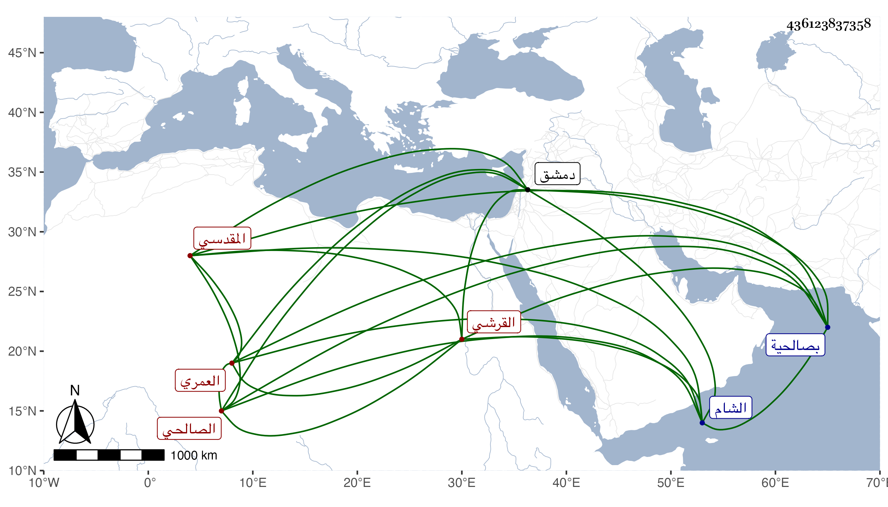

0902Sakhawi.DawLamic.ITO20230111-ara1.EIS1600.436123837358
Biography ID: 436123837358
495
عائشة ابنة محمد بن عبد الهادي بن عبد الحميد بن عبد الهادي بن يوسف ابن محمد بن قدامة بن مقدام مسندة الدنيا أم محمد القرشي العمري المقدسي الصالحي ؛ ولدت في رمضان سنة ثلاث وعشرين وسبعمائة وأسمعت على الحجار والشرف عبد الله بن الحسن وعبد القادر بن الملوك وخلق ، فمما سمعته على الاول الصحيح وعلى الثاني صحيح مسلم وعلى الثالث سيرة ابن هشام ، وأجاز لها ابن الزراد واسمعيل بن عمر بن الحموي وست الفقهاء ابنة الواسطى ويحيى ابن فضل الله والبرهان الجعبري والبرهان بن الفركاح وأبو الحسن البندنيجي وعبد الله بن محمد بن يوسف والشرف بن البارزي وابراهيم بن صالح بن العجمي وآخرون ، وعمرت حتى تفردت عن جل شيوخها بالسماع والاجازة في سائر الآفاق وروت الكثير وأخد عنها الأئمة سيما الرحالة فأكثروا ، وكانت سهلة في الاسماع لينة الجانب حدثنا عنها خلق والرواة عنها الآن بالاجازة كثيرون وأما بالسماع ففي الشام بل والخطيب بن أبي عمر الحنبلي سمع منها بعض ذم الكلام للهروى وممن أكثر عنها شيخنا وذكرها في معجمه وقال إنها ماتت في ربيع الأول سنة ست عشرة يعنى بصالحية دمشق بعد أن أجازت لزين خاتون ورابعة ومحمد اولاده ، وهي آخر من حدث بالبخاري عاليا بالسماع ، ومن الاتفاق العجيب ان ست الوزراء ابنة عمر بن اسعد بن المنجا كانت آخر من حدث من النساء عن ابن الزبيدي في الدنيا وماتت سنة ست عشرة وسبعمائة وزادت عليها بأن لم يبق من الرجال ايضا ممن سمع على الحجار رفيق ست الوزراء في الدنيا غيرها وبين وفاتيهما مائة سنة سواء ، وهي في عقود المقريزى .
